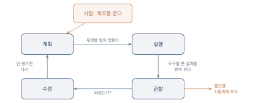

에이전트: 스스로 일하는 AI
이 장을 마치면
- 대화형 AI와 에이전트의 차이를 설명할 수 있다.
- 에이전트가 도구를 쓴다는 말이 무엇을 뜻하는지 안다.
- 계획–실행–관찰–수정의 순환을 예로 들어 설명할 수 있다.
- 자율성의 정도를 구분하고, 어디까지 맡길지 스스로 정할 수 있다.
- 무료로 쓸 수 있는 에이전트 도구를 하나 이상 다룰 수 있다.
2장의 인공지능은 묻는 말에 답하는 상대였다. 답이 훌륭해도 그것을 받아 옮기고 실행하는 일은 여전히 사람 몫이었다. 이 장에서 다루는 에이전트agent는 다르다. 목표를 주면 스스로 순서를 정하고, 필요한 도구를 쓰고, 결과를 보고 다시 시도한다.
이 차이가 이 책을 가능하게 한다. 코드를 몰라도 무언가를 만들 수 있는 것은, 파일을 만들고 코드를 쓰고 실행해 보고 오류를 고치는 그 여러 단계를 에이전트가 이어서 해내기 때문이다. 다만 맡긴다는 것은 곧 잘못될 수 있다는 뜻이기도 하다. 그래서 이 장은 무엇을 맡기고 무엇을 지켜볼지도 함께 다룬다.
2장까지는 매번 전체를 다시 만들어 달라고 했다. 기능 하나를 붙일 때마다 처음부터 설명하는 셈이다.
이 장에서는 에이전트에게 파일을 넘기고 여기에 이 기능을 붙여 달라고 맡긴다. 에이전트가 파일을 고치고, 열어 보고, 오류를 읽고, 다시 고치는 과정을 옆에서 지켜본다. 붙일 기능은 이상해 보이는 값을 찾아 표시하기 — 5장에서 자료를 다룰 때 그대로 쓰게 된다.
3.1 채팅에서 에이전트로
2장의 인공지능은 답을 주는 상대였다. 답이 아무리 좋아도 그것을 받아서 실제로 무언가를 하는 일은 사람 몫이었다. 이 장에서 다루는 에이전트agent는 그 다음 단계다. 목표를 주면 스스로 일을 진행한다.
같은 일을 두 가지 방식으로
동아리 회비 정산 표를 만든다고 하자. 두 방식을 나란히 놓아 보자.
대화형 AI에게 물었을 때는 이렇게 흘러간다.
- 나: 회비 정산용 웹 페이지를 만드는 코드를 써 줘
- AI: 코드를 준다
- 나: 코드를 복사해 파일로 저장한다. 파일 이름과 확장자를 정한다
- 나: 브라우저로 연다. 화면이 하얗다
- 나: 개발자 도구를 열어 오류 메시지를 찾는다
- 나: 메시지를 복사해 AI에게 붙여 넣는다
- AI: 고친 코드를 준다
- 나: 다시 저장하고 다시 연다…
3–8번이 반복된다. 이 왕복이 초심자에게는 가장 지치는 구간이었다. 무엇이 잘못됐는지 몰라서가 아니라, 어디에 저장하고 어떻게 열고 어디서 오류를 보는지를 모르기 때문에 막혔다.
에이전트에게 맡겼을 때는 이렇게 된다.
- 나: 회비 정산용 웹 페이지를 만들고, 동작하는지 확인해 줘
- 에이전트: 파일을 만든다 → 코드를 쓴다 → 열어 본다 → 오류를 읽는다 → 고친다 → 다시 열어 본다
- 에이전트: 만들었습니다. 다만 금액에 쉼표를 넣는 부분은 이렇게 처리했는데 확인해 주세요
- 나: 확인하고 고칠 것을 말한다
사라진 것은 중간 단계가 아니다. 중간 단계는 그대로 있고, 그것을 사람이 하지 않게 되었을 뿐이다.
대화형 AI와 에이전트의 차이는 능력의 차이가 아니라 누가 다음 단계를 정하는가의 차이다. 전자에서는 사람이 매 단계를 정하고, 후자에서는 에이전트가 정하고 사람은 방향과 결과를 본다.
그래서 무엇이 달라지는가
| 대화형 AI | 에이전트 | |
|---|---|---|
| 받는 것 | 답(글, 코드) | 결과물(동작하는 것) |
| 사람이 하는 일 | 매 단계 지시와 실행 | 목표 제시와 확인 |
| 실패했을 때 | 사람이 알아채고 다시 요청 | 스스로 알아채고 다시 시도 |
| 잘 맞는 일 | 생각 정리, 초안, 검토 | 만들기, 자료 처리, 반복 작업 |
| 위험한 점 | 틀린 답을 그대로 씀 | 틀린 채로 끝까지 진행함 |
| 이 책의 장 | 4–7장 | 8–12장 |
표 3.1의 마지막 위험 항목을 눈여겨보자. 에이전트가 편한 만큼 위험도 커진다. 대화형 AI가 틀리면 사람이 읽다가 알아챌 기회가 있다. 에이전트가 틀린 방향으로 가면 그 방향으로 끝까지 만들어 놓는다. 30분 뒤에 완성된 엉뚱한 것을 받게 된다.
이 위험을 줄이는 방법이 이 장의 나머지 절과 4–7장 전체의 내용이다. 요약하면 이렇다. 맡기기 전에 무엇을 원하는지 분명히 하고, 중간에 확인할 지점을 만들어 둔다.
왜 이제야 가능해졌는가
에이전트라는 발상 자체는 오래되었다. 스스로 판단해 행동하는 프로그램에 대한 연구는 수십 년 전부터 있었다. 그런데 실제로 쓸 만해진 것은 최근이다. 세 가지가 갖춰졌기 때문이다.
첫째, 말로 된 목표를 알아듣게 되었다. 예전의 자동화 프로그램은 정해진 형식으로 명령해야 했다. 지금은 이거 좀 정리해 줘 정도로도 통한다.
둘째, 도구를 쓸 수 있게 되었다. 검색하고, 파일을 읽고 쓰고, 코드를 실행한다. 다음 절에서 자세히 본다.
셋째, 자기 결과를 읽고 판단할 수 있게 되었다. 오류 메시지를 보고 무엇이 잘못됐는지 짐작하고 고친다. 이것이 없으면 앞의 둘이 있어도 한 번 실패하면 멈춘다.
서비스마다 부르는 이름이 다르다. 에이전트, 어시스턴트, 코파일럿, 혹은 그냥 제품 이름으로 부르기도 한다. 이름으로 구분하려 하지 말고 하는 일로 구분하자. 답만 주면 대화형이고, 스스로 여러 단계를 밟아 결과물을 내놓으면 에이전트다. 그 중간에 걸친 것도 많다.
3.2 도구를 쓰는 AI
2장에서 언어 모델이 못하는 일을 여럿 보았다. 정확한 계산, 최신 정보, 우리 학교 사정, 글자 세기. 그런데 사람도 그런 일을 다 머릿속으로 하지는 않는다. 계산기를 쓰고, 검색하고, 서류를 찾아본다.
에이전트가 하는 일이 정확히 그것이다. 도구 사용tool use이라고 부른다.
어떤 도구를 쓰는가
| 도구 | 하는 일 | 메워 주는 약점 |
|---|---|---|
| 웹 검색 | 지금 인터넷에 있는 것을 찾는다 | 지식 컷오프, 최신 정보 |
| 파일 읽기 | 내가 올린 자료를 본다 | 우리 사정을 모르는 것 |
| 파일 쓰기 | 결과물을 파일로 만든다 | 사람이 옮겨 적어야 했던 일 |
| 코드 실행 | 만든 코드를 돌려 본다 | 그럴듯하지만 안 도는 코드 |
| 계산 | 정확히 계산한다 | 자릿수 계산의 부정확함 |
| 화면 열기 | 만든 페이지를 실제로 띄운다 | 동작 여부를 모르는 것 |
이 가운데 이 수업에서 가장 중요한 것은 코드 실행이다. 2.1절 끝에서 말했듯 모델은 그럴듯하게 생긴 코드를 만들 뿐 그것이 돌아가는지는 모른다. 실행해 보는 도구가 붙는 순간, 그럴듯한 코드가 동작하는 코드로 바뀐다. 이 하나가 코드를 모르는 사람이 무언가를 만들 수 있게 된 결정적인 이유다.
자료를 참조하게 하기
내가 가진 자료를 근거로 답하게 하는 방식을 흔히 맥락 보강RAG이라고 부른다. 이름이 어렵지만 하는 일은 단순하다. 질문과 관련 있는 부분을 자료에서 찾아 컨텍스트에 얹은 뒤 답하게 하는 것이다(2.4절의 책상 비유를 떠올리면 된다).
우리가 파일을 올리고 묻는 것이 이미 이 방식의 가장 단순한 형태다. 자료가 많아지면 도구가 알아서 필요한 부분만 골라 온다.
첨부한 학사 안내문에서만 근거를 찾아 답해 줘.
질문: 전공 심화 과정을 신청하려면 어떤 조건을 갖춰야 하는가?
규칙:
- 안내문에 없는 내용은 [문서에 없음]이라고만 표시하고 추측하지 말 것
- 답변의 각 문장 끝에 근거가 있는 쪽 번호를 적을 것
이 프롬프트의 두 규칙이 핵심이다. 자료를 준다고 해서 모델이 자동으로 자료만 보는 것은 아니다. 자료 밖으로 나가지 말라고 명시해야 지어내지 않는다.
도구가 붙었다고 해서 2장의 성질이 사라지지는 않는다. 검색해 온 내용도 잘못 읽을 수 있고, 실행 결과도 잘못 해석할 수 있다. 도구는 재료를 가져다줄 뿐, 판단은 여전히 그럴듯함으로 한다.
도구를 쓰면 무엇을 조심해야 하는가
도구는 힘이자 위험이다. 답만 주던 상대가 이제 실제로 무언가를 한다.
파일을 지울 수 있다. 파일을 쓸 수 있다는 것은 덮어쓸 수도 있다는 뜻이다. 중요한 자료가 있는 폴더를 그대로 열어 주지 않는 것이 좋다.
내 자료가 밖으로 나갈 수 있다. 올린 파일은 서비스 제공자의 서버로 간다. 개인정보나 학교 내부 자료를 다룰 때는 올리기 전에 판단해야 한다(12.5절, 부록 D).
인터넷의 내용을 그대로 믿는다. 검색해 온 페이지가 틀린 정보일 수 있다. 출처를 한 번은 확인하는 습관이 필요하다.
돈이 나갈 수 있다. 유료 서비스와 연결된 도구라면 사용량만큼 비용이 생긴다. 이 수업에서는 무료 범위만 쓰지만, 한도를 넘겨 결제로 넘어가지 않도록 설정을 확인해 두자.
에이전트에게 폴더 접근을 허용할 때는 그 프로젝트만을 위한 새 폴더를 만들어 주자. 바탕화면이나 문서 폴더 전체를 열어 주면, 엉뚱한 파일을 읽거나 고치는 사고가 날 수 있다. 이것은 에이전트가 나빠서가 아니라, 무엇이 중요한 파일인지 알 방법이 없기 때문이다.
무엇을 쓸 수 있는지 물어보기
지금 쓰는 도구가 어떤 능력을 갖고 있는지는 직접 물어보는 것이 가장 빠르다. 서비스마다 다르고 자주 바뀌기 때문이다.
너는 지금 이 대화에서 어떤 것을 할 수 있어? 웹 검색, 파일 읽기, 파일 만들기, 코드 실행, 화면 미리보기 중에서 되는 것과 안 되는 것을 구분해서 알려 줘. 안 되는 것은 대신 어떤 방법이 있는지도 알려 줘.
이 질문을 새 도구를 만날 때마다 한 번씩 던지자. 무엇이 되는지 알아야 무엇을 맡길지 정할 수 있다.
3.3 계획하고 되짚는 순환
에이전트가 일하는 방식은 하나의 순환으로 정리된다. 계획하고, 실행하고, 결과를 보고, 고친다. 그리고 될 때까지 되풀이한다.

그림 3.1에서 사람이 관여하는 곳은 양 끝뿐이다. 가운데 순환은 몇 번이고 돌 수 있고, 실제로 여러 번 돈다.
실제로는 이렇게 보인다
한 학생이 설문 응답 파일을 정리해 달라고 맡겼을 때의 기록이다. 중간 과정을 그대로 옮겼다.
계획 올려 주신 파일을 먼저 확인하고, 응답 형식을 파악한 뒤, 문항별로 집계하겠습니다.
실행 – 파일 읽기
설문응답.csv를 읽었습니다. 212행, 8열입니다.
관찰 3번 열의 값이 일정하지 않습니다. 매우 그렇다, 매우그렇다, 5가 섞여 있습니다.
수정 표기를 통일한 뒤 다시 집계하겠습니다. 다만 5가 매우 그렇다를 뜻하는지 확실하지 않아, 확인이 필요합니다.
사람에게 5를 매우 그렇다로 처리해도 될까요? 아니면 별도로 분류할까요?
여기서 두 가지를 볼 수 있다. 첫째, 한 번에 끝나지 않았다. 읽어 보고 나서야 문제를 발견했고 계획을 고쳤다. 둘째, 판단이 필요한 지점에서 멈추고 물었다. 이것이 잘 작동하는 에이전트의 모습이다.
실패는 정상이다
에이전트는 자주 실패한다. 그리고 실패한 뒤 다시 시도한다. 처음 보면 불안하지만, 오히려 이것이 제대로 돌아가고 있다는 신호다.
차트를 그리려 했으나 오류가 발생했습니다.
오류 날짜 열을 숫자로 인식하지 못했습니다.
원인 추정
날짜가 2026.3.4처럼 마침표로 구분되어 있어 표준 형식이 아닙니다.
다시 시도 형식을 지정해 다시 읽었습니다. 성공했습니다. 차트를 그립니다.
12장에서 배울 것이 바로 이 태도다. 오류는 실패가 아니라 정보다. 에이전트가 이렇게 일하는 것을 여러 번 보고 나면, 나중에 스스로 막혔을 때도 같은 순서로 접근하게 된다.
에이전트가 첫 시도에 성공하면 운이 좋은 것이고, 두세 번 실패하다 되면 정상이다. 다섯 번을 넘겨도 같은 자리에서 맴돈다면 그때는 사람이 개입해야 한다 — 대개 지시가 모호했거나, 애초에 불가능한 것을 요구했거나, 필요한 자료를 주지 않은 것이다.
사람의 순환과 같은 모양
이 순환을 어디서 본 것 같다면 맞다. 4–6장에서 배울 문제 해결의 절차와 같은 모양이다.
| 에이전트 | 사람의 문제 해결 | 이 책의 장 |
|---|---|---|
| 계획 | 문제를 정의하고 해법을 고른다 | 4–6장 |
| 실행 | 만든다 | 8–11장 |
| 관찰 | 써 보게 하고 반응을 받는다 | 10장 |
| 수정 | 고쳐서 다시 내놓는다 | 12장 |
우연이 아니다. 목표를 향해 불확실한 상황에서 나아가는 방법은 결국 이 모양으로 수렴한다. 그래서 이 책에서 배우는 것은 AI를 쓰는 법인 동시에 일을 진행하는 법이기도 하다.
중간에 확인할 지점을 만들어 두기
앞 절에서 에이전트의 위험이 틀린 채로 끝까지 진행하는 것이라고 했다. 대책은 순환 중간에 사람이 볼 지점을 정해 두는 것이다.
[목표] 설문 응답 파일을 문항별로 집계해 표로 만들어 줘.
[진행 방식] 다음 순서로 하고, 각 단계가 끝날 때마다 결과를 보여 준 뒤 내 확인을 받고 다음으로 넘어가 줘.
1. 파일을 읽고 어떤 열이 있는지 알려 준다
2. 정리가 필요한 부분(표기 불일치, 빈칸 등)을 먼저 보고한다
3. 처리 방침을 내가 정하면 그때 집계한다
4. 집계 결과와 함께, 처리 과정에서 버리거나 바꾼 값이 몇 건인지 알려 준다
[제약] 확실하지 않은 값은 임의로 처리하지 말고 물어봐 줘.
이렇게 요청하면 시간이 조금 더 걸린다. 대신 30분 뒤에 엉뚱한 결과를 받고 처음부터 다시 하는 일이 없어진다. 맡기는 일이 중요할수록 확인 지점을 촘촘히 둔다.
3.4 자율성의 정도와 사람의 자리
에이전트에게 맡긴다는 말은 흑백이 아니다. 어디까지 맡기고 어디서부터 확인할지를 정할 수 있고, 그 결정이 결과의 안전을 좌우한다.
세 단계
| 단계 | 에이전트가 하는 일 | 맞는 상황 |
|---|---|---|
| 제안 | 무엇을 할지 알려만 준다. 실행은 사람이 한다 | 처음 해 보는 일, 되돌릴 수 없는 일 |
| 승인 후 실행 | 하려는 일을 보여 주고, 사람이 허락하면 실행한다 | 대부분의 작업. 이 수업의 기본값 |
| 자율 실행 | 알아서 다 하고 결과만 보고한다 | 여러 번 해 봐서 결과를 아는 일 |
많은 도구가 이 단계를 설정으로 제공한다. 설정이 없는 도구라면 프롬프트로 정하면 된다 — 실행하기 전에 무엇을 할 것인지 먼저 알려 줘라고 쓰는 것만으로도 한 단계 내려온다.
어느 단계로 할지 정하는 세 가지 질문
되돌릴 수 있는가? 파일을 새로 만드는 것은 되돌릴 수 있다. 덮어쓰거나 지우는 것은 어렵다. 이미 남에게 보낸 것은 되돌릴 수 없다.
남에게 영향이 가는가? 내 폴더 안에서 끝나는 일과, 다른 사람이 보는 것에 손대는 일은 다르다. 공개된 페이지를 고치는 일, 단체 대화방에 글을 올리는 일이 후자다.
돈이나 개인정보가 걸리는가? 결제가 발생하거나, 남의 개인정보를 다루는 일은 언제나 사람이 확인한다. 예외를 두지 않는 것이 좋다.
셋 중 하나라도 그렇다면 자율 실행으로 두지 않는다. 편리함보다 되돌릴 수 없는 사고를 피하는 것이 우선이다. 이 원칙은 10.4절(사용자가 생기면 따라오는 책임)과 12.5절에서 다시 나온다.
맡겨도 사라지지 않는 사람의 일
무엇을 맡기든 다음 셋은 사람에게 남는다. 이 책 전체가 사실상 이 셋을 훈련하는 과정이다.
첫째, 목표를 정하는 일. 무엇을 만들 것인지, 왜 그것인지, 무엇이 되면 성공인지. 에이전트는 목표를 대신 정해 주지 않는다. 물어보면 그럴듯한 목표를 제안하지만, 그것이 내 문제인지는 알지 못한다(2.2절).
둘째, 맞는지 판정하는 일. 결과가 옳은지, 쓸 만한지, 내놓아도 되는지. 에이전트는 동작하는가까지는 확인하지만 옳은가는 확인하지 못한다. 계산식이 잘못돼도 오류 없이 잘 돌아간다.
셋째, 책임지는 일. 만든 것이 남에게 피해를 주면 책임은 만든 사람에게 있다. AI가 그렇게 만들었다는 변명이 되지 않는다.
자동화되는 것은 수단이지 판단이 아니다. 그리고 판단을 잘하려면 무엇을 하고 있는지 알아야 한다 — 그래서 8.4절에서 만들어진 것을 읽는 최소한의 눈을 익힌다.
맡길 것과 맡기지 않을 것
실제 작업에서 자주 나오는 판단을 정리해 두자.
| 일 | 권하는 단계 | 이유 |
|---|---|---|
| 새 파일을 만들어 코드를 쓴다 | 자율 실행 | 되돌릴 수 있다 |
| 기존 파일을 고친다 | 승인 후 실행 | 되돌리기 번거롭다 |
| 파일이나 폴더를 지운다 | 제안 | 되돌릴 수 없다 |
| 자료를 정리해 새 표를 만든다 | 승인 후 실행 | 원본은 그대로 둔다 |
| 공개된 페이지를 갱신한다 | 승인 후 실행 | 남이 본다 |
| 개인정보가 든 파일을 다룬다 | 제안 | 애초에 올리지 않는 편이 낫다 |
표 3.5에서 눈여겨볼 것은 원본을 건드리지 않는 방식이 반복된다는 점이다. 고치는 대신 새로 만들고, 지우는 대신 옮겨 둔다. 이 습관 하나가 초심자가 겪는 사고의 절반을 막아 준다.
작업을 시작하기 전에 원본 폴더를 통째로 복사해 _원본 같은 이름으로 두자. 용량이 크지 않다면 이 30초가 여러 번 여러분을 구해 줄 것이다. 부록 C의 어제 되던 것이 오늘 안 된다는 항목이 대부분 이것으로 해결된다.
3.5 무료로 쓸 수 있는 에이전트
이제 실제로 쓸 도구를 정한다. 이 절의 목표는 설치 없이 오늘 당장 쓸 수 있는 것 하나를 확보하는 것이다. 더 강력한 도구는 그다음이다.
두 갈래
에이전트형 도구는 크게 둘로 나뉜다. 어느 쪽을 고르느냐에 따라 할 수 있는 일과 겪을 어려움이 달라진다.
| 웹에서 바로 | 설치해서 | |
|---|---|---|
| 준비 | 계정만 있으면 된다 | 프로그램을 설치해야 한다 |
| 다루는 것 | 대화창 안의 결과물 | 내 컴퓨터의 파일과 폴더 |
| 결과물 | 그 자리에서 보이고 내려받는다 | 내 폴더에 그대로 쌓인다 |
| 막히는 지점 | 무료 한도 | 설치·권한·환경 문제 |
| 이 책에서 | 기본 (8–10장) | 선택 (11장 이후, 여유가 되면) |
이 수업의 기본은 웹에서 쓰는 쪽이다. 설치형이 더 강력하지만, 교양 수업에서 설치 문제로 한 주를 통째로 날리는 일이 실제로 자주 생긴다. 웹에서 먼저 끝까지 한 번 만들어 본 다음, 필요를 느낄 때 설치형으로 넘어가는 순서를 권한다.
웹에서 바로 쓰는 도구
설명을 넣으면 코드와 함께 동작하는 화면을 옆에 띄워 준다. 고쳐 달라고 말하면 그 자리에서 다시 만들어진다. 이 수업의 9–10장은 이 기능만으로 완주할 수 있다. 만든 결과는 파일로 내려받아 보관할 수 있으며, 내려받은 파일이 곧 10장에서 배포할 대상이 된다.
설치 없이 파이썬 코드를 실행하고 결과와 그림을 바로 볼 수 있다. 파일을 올리고 내려받을 수 있어서 자료 정리 작업에 적합하다. 11장에서 쓴다. 인공지능이 코드를 만들어 주는 기능이 함께 들어 있는 경우가 많으므로, 그 자리에서 만들고 바로 실행하는 순환이 가능하다.
설치해서 쓰는 도구
내 컴퓨터의 폴더를 직접 다룬다. 파일을 만들고 고치고 실행하며, 여러 파일에 걸친 작업도 한 번에 해낸다. 무료 한도 안에서 쓸 수 있는 것들이 있으나 한도는 자주 바뀐다. 처음 쓸 때는 반드시 빈 폴더를 하나 만들어 그 안에서만 작업하게 한다(3.4절).
설치형 도구를 쓸 때 모든 것을 자동으로 승인하는 옵션을 켜지 말자. 편하지만, 어느 순간 무엇이 왜 바뀌었는지 알 수 없게 된다. 이 수업의 목적은 빨리 만드는 것이 아니라 무슨 일이 일어나는지 알면서 만드는 것이다.
고르는 기준
어느 것이 낫다고 말하지 않겠다. 대신 고를 때 확인할 것을 준다.
- 계정을 만들자마자 무료로 쓸 수 있는가? (카드 등록을 요구하지 않는가)
- 만든 결과물을 파일로 내려받을 수 있는가?
- 무료 한도가 하루 단위인가 월 단위인가? 다 쓰면 어떻게 되는가?
- 화면 미리보기가 무료 계정에서도 되는가?
- 대화 기록이 남아서 다음 주에 이어 할 수 있는가?
두 번째 항목이 특히 중요하다. 내려받을 수 없는 결과물은 그 서비스에 갇힌다. 서비스가 정책을 바꾸거나 한도가 떨어지면 학기 중에 작업을 이어 갈 수 없게 된다.
하나로 몰지 않기
마지막 조언이다. 도구 하나에 모든 것을 걸지 말자. 최소한 다음 세 자리에는 각각 대안을 하나씩 확보해 두는 것이 좋다.
- 생각을 정리하는 대화형 AI — 2군데
- 화면을 만들어 주는 도구 — 2군데
- 파이썬을 실행하는 환경 — 1군데 이상
같은 프롬프트를 두 곳에 넣어 보는 습관은 한도 관리에도 도움이 되고, 실습 1-4에서 확인했듯 답의 신뢰도를 가늠하는 방법이기도 하다. 구체적인 서비스 목록과 한도는 부록 A에 정리해 두었으며, 학기 시작 전에 한 번 확인하기를 권한다.
실습 3-1. 이 도구는 무엇을 할 수 있나
지금 쓰고 있는 도구 두 곳에 3.2절의 능력 확인 프롬프트를 넣는다. 답을 받아 다음 표를 채운다.
도구 이름:
웹 검색 되는가? ( ) 출처가 표시되는가? ( )
파일 읽기 되는가? ( ) 어떤 형식까지? ( )
파일 만들기 되는가? ( ) 내려받을 수 있는가? ( )
코드 실행 되는가? ( ) 어떤 언어? ( )
화면 미리보기 되는가? ( )
무료 한도 ( )답을 그대로 믿지 말고 하나씩 실제로 시켜 확인한다. 된다고 말했는데 실제로는 안 되는 경우가 있다.
실습 3-2. 에이전트에게 작은 일 맡기기
세 단계 이상이 필요한 작은 과제 하나를 맡긴다. 다음 중 하나를 고르거나 비슷한 것을 직접 정한다.
- 우리 학과 시간표를 표로 정리하고, 공강 시간이 가장 긴 요일을 찾아 줘
- 이 글에서 인용된 자료 목록을 뽑아 표로 만들고, 각각 실제로 존재하는지 확인해 줘
- 내가 올린 사진 파일들의 이름을 촬영 날짜순으로 바꿔 줘
맡긴 뒤 에이전트가 밟은 단계를 그대로 받아 적는다. 몇 단계였는가? 중간에 계획을 바꾼 지점이 있었는가? 사람에게 물어본 지점이 있었는가?
실습 3-3. 같은 일, 두 방식
실습 3-2와 같은 과제를 이번에는 대화형 AI로만 해 본다. 즉 답을 받아 사람이 직접 실행하고, 결과를 다시 알려 주며 진행한다.
- 걸린 시간을 각각 잰다.
- 내가 직접 손을 댄 횟수를 센다.
- 결과물의 질에 차이가 있는가?
- 어느 쪽이 무슨 일이 일어났는지 더 잘 알겠는가?
4번의 답이 대개 대화형 쪽이다. 그래서 처음 해 보는 일은 느린 방식으로 한 번 해 보는 것이 도움이 된다.
실습 3-4. 일부러 실패시키기
에이전트에게 일부러 모호한 지시를 준다.
자료 좀 정리해 줘. 보기 좋게.
그리고 무슨 일이 벌어지는지 관찰한다.
- 에이전트가 되물었는가, 아니면 알아서 진행했는가?
- 알아서 진행했다면 무엇을 가정했는가?
- 그 가정 중 틀린 것은 무엇인가?
- 어느 지점에서 사람이 개입했어야 하는가?
이어서 같은 일을 3.3절의 중간 확인 지점을 요구하는 프롬프트 형식으로 다시 시켜 보고, 결과가 어떻게 달라지는지 비교한다.
실습 3-5. 맡길 것과 맡기지 않을 것
실습 1-3에서 적은 불편 열 가지를 다시 꺼낸다. 각각에 대해, 만약 자동화한다면 표 3.4의 어느 단계가 맞을지 표시하고 이유를 한 줄씩 적는다.
3.4절의 세 가지 질문(되돌릴 수 있는가 / 남에게 영향이 가는가 / 돈이나 개인정보가 걸리는가)을 판단 근거로 쓴다. 이 표는 12.5절과 기말 프로젝트에서 다시 쓰인다.
실습 3-6. 제작 — 에이전트에게 기능 하나를 맡긴다
2장에서 고친 파일을 에이전트에게 넘기고, 이번에는 전체를 다시 만들지 말고 여기에 붙여 달라고 맡긴다.
맡길 기능 — 이상해 보이는 값 찾아 표시하기.
첨부한 analyze.html에 기능을 하나 붙여 줘. 전체를 다시 만들지 말고 이 파일을 고쳐 줘.
[붙일 기능] 표 아래에 확인이 필요한 행 목록을 보여 준다. 다음에 해당하는 행을 찾는다.
- 숫자 열이 비어 있거나 숫자로 읽히지 않는 행
- 숫자 열의 값이 그 열의 다른 값들과 크게 동떨어진 행
- 완전히 똑같은 내용이 두 번 이상 나오는 행
각 행에 왜 걸렸는지 이유를 함께 적어 줘. 몇 건이 걸렸는지도 위에 표시해 줘.
[진행 방식] 다음 순서로 하고, 각 단계가 끝나면 결과를 보여 준 뒤 내 확인을 받고 넘어가 줘.
1. 지금 파일이 무엇을 하는지 읽고 요약한다
2. 어디에 어떻게 붙일지 알려 준다
3. 고친 뒤 실제로 열어 동작을 확인한다
4. 원래 되던 기능이 그대로인지 확인한다
[제약] 파일은 하나로 유지. 요청하지 않은 기능은 넣지 말 것.
관찰할 것 — 이 실습의 진짜 목적은 기능이 아니라 에이전트가 일하는 모습이다.
밟은 단계 수 :
스스로 실패하고 다시 시도한 적 : (있다 / 없다 — 몇 번: )
나에게 물어본 지점 :
임의로 정한 것 :
원래 기능이 망가진 곳 : (있었다면 어떻게 알았나: )제출 — 위 기록, 붙인 기능이 동작하는 화면, 그리고 2장의 방식(전체 다시 만들기)과 비교해 무엇이 편했고 무엇이 불안했는지.
고친 파일을 받기 전에 사본을 남긴다. 에이전트가 파일을 직접 고치므로, 잘못되면 되돌릴 곳이 필요하다(3.4절).
3장 요약
- 에이전트agent와 대화형 AI의 차이는 능력이 아니라 누가 다음 단계를 정하는가이다. 중간 과정이 사라진 것이 아니라 사람의 손을 떠났을 뿐이다.
- 그래서 편리한 만큼 위험도 커진다. 대화형 AI가 틀리면 읽다가 알아챌 기회가 있지만, 에이전트가 틀리면 그 방향으로 끝까지 만들어 놓는다.
- 에이전트가 쓸 만해진 것은 세 가지가 갖춰졌기 때문이다. 말로 된 목표를 알아듣고, 도구 사용tool use이 가능해졌고, 자기 결과를 읽고 고칠 수 있게 되었다.
- 도구는 2장에서 본 약점을 메운다. 검색은 지식 컷오프를, 파일 읽기는 우리 사정을 모르는 것을, 코드 실행은 그럴듯하지만 안 도는 코드를 메운다. 마지막 것이 코드를 모르는 사람도 만들 수 있게 된 결정적 이유다.
- 그러나 도구가 붙어도 판단은 여전히 그럴듯함으로 한다. 검색해 온 내용도 틀릴 수 있고, 자료를 줘도 자료 밖으로 나가지 말라고 명시하지 않으면 지어낸다.
- 에이전트는 계획–실행–관찰–수정의 순환으로 일한다. 두세 번 실패하다 되는 것이 정상이고, 다섯 번을 넘겨 같은 자리에서 맴돌면 사람이 개입해야 한다.
- 이 순환은 4–6장에서 배울 사람의 문제 해결 절차와 같은 모양이다. 그래서 이 책이 가르치는 것은 AI 사용법인 동시에 일을 진행하는 방법이다.
- 자율성은 세 단계로 나뉜다 — 제안 / 승인 후 실행 / 자율 실행. 되돌릴 수 있는가, 남에게 영향이 가는가, 돈이나 개인정보가 걸리는가. 하나라도 걸리면 자율 실행으로 두지 않는다.
- 무엇을 맡기든 목표를 정하는 일, 맞는지 판정하는 일, 책임지는 일은 사람에게 남는다. 자동화되는 것은 수단이지 판단이 아니다.
- 도구는 웹에서 바로 쓰는 것과 설치해서 쓰는 것으로 나뉜다. 이 수업의 기본은 웹이며, 무엇을 고르든 결과물을 파일로 내려받을 수 있는가를 반드시 확인한다.
3장 연습문제
- ★ 대화형 AI와 에이전트의 차이를 한 문장으로 쓰고, 각각이 잘 맞는 작업을 하나씩 예로 드시오.
- ★ 다음 중 도구 사용tool use에 해당하는 것을 모두 고르시오.
- 질문을 받고 학습한 내용으로 답한다
- 웹을 검색해 최신 자료를 찾아 온다
- 만든 코드를 실행해 오류가 있는지 확인한다
- 문장을 더 자연스럽게 다듬는다
- 올린 엑셀 파일을 열어 값을 읽는다
- ★ 에이전트의 순환 네 단계를 순서대로 쓰고, 각 단계에서 무엇을 하는지 한 줄씩 설명하시오.
- ★★ 어떤 학생이 에이전트에게 보고서 폴더를 정리해 줘라고 시켰더니, 필요한 파일 몇 개가 사라졌다. 무엇이 잘못되었는지 3.4절의 개념으로 설명하고, 다시 한다면 어떻게 할지 두 가지 이상 제시하시오.
- ★★ 다음 각 작업에 대해 표 3.4의 세 단계 중 어느 것이 적절한지 고르고, 3.4절의 세 가지 질문으로 근거를 대시오.
- 실습 자료를 읽어 요약본을 새 파일로 만든다
- 학과 공지 페이지의 내용을 수정한다
- 조원들의 연락처가 담긴 파일을 정리한다
- 코드에 있는 오류를 찾아 고친다
- 필요 없어 보이는 파일들을 삭제한다
- ★★ 3.3절의 중간 확인 지점을 요구하는 프롬프트를 참고하여, 자기 전공의 작업 하나에 대해 같은 형식의 프롬프트를 작성하시오. 확인 지점이 최소 세 개 있어야 하며, 각 지점에서 무엇을 확인할 것인지가 분명해야 한다.
- ★★★ 실습 3-2와 3-3의 결과를 바탕으로, 어떤 종류의 일을 에이전트에게 맡기고 어떤 일을 직접 할 것인가에 대한 자신의 기준을 만들어 서술하시오. 기준은 세 항목 이상이어야 하고, 각각에 대해 실제 경험한 근거를 붙여야 한다.
- ★★★ 에이전트에게 자기 전공의 자료 하나(설문 응답, 실험 기록, 명단 등)를 정리하도록 맡기되, 일부러 지저분한 자료를 주시오(표기가 통일되지 않았거나 빈칸이 있는 것). 보고에는 (1) 준 자료의 문제점, (2) 에이전트가 그 문제를 발견했는지, (3) 발견했다면 어떻게 처리했는지, (4) 그 처리 방식에 동의하는지와 그 이유가 포함되어야 한다.